15 body-composition profiles spanning extremes, sex-specific cases, missing data, and geometric outliers. Note any tile that looks wrong; "OK" / "broken: …" / blank=skip all fine. Export → paste back.
Competition bodybuilder — 5 % BF, FFMI 27.9 (very high muscle, very low fat)
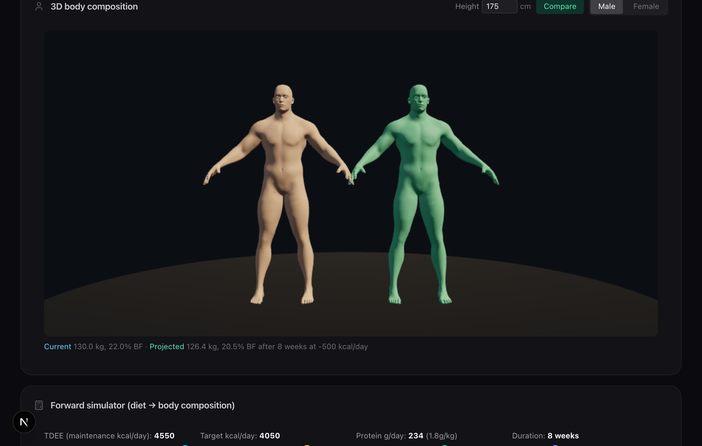
Strongman / sumo — 130 kg @ 22 % BF, FFMI 33.1 (high mass on all axes)
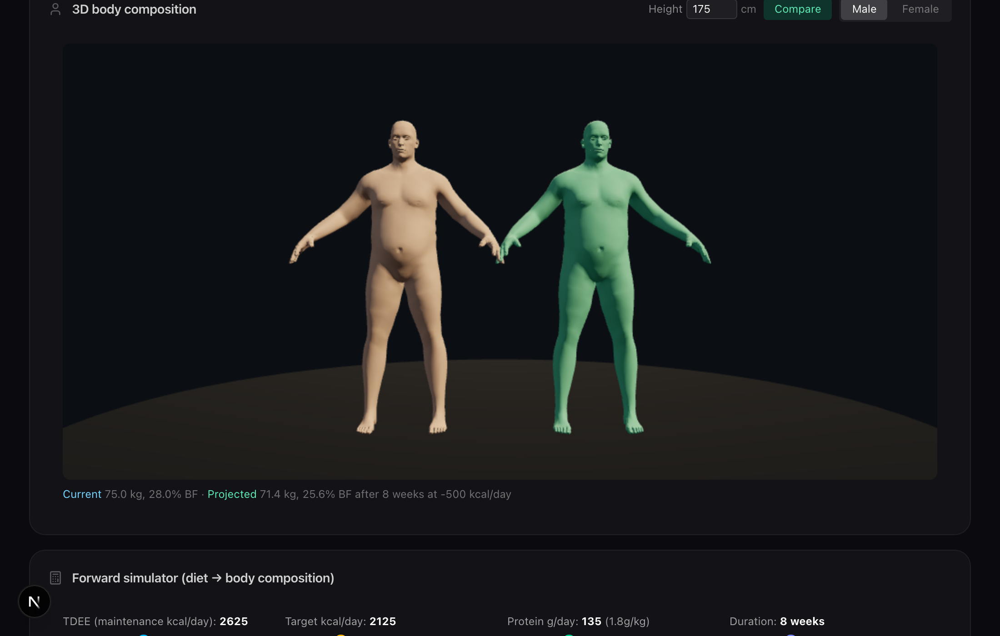
Skinny-fat — average weight, high BF, FFMI 17.6 (low LBM)
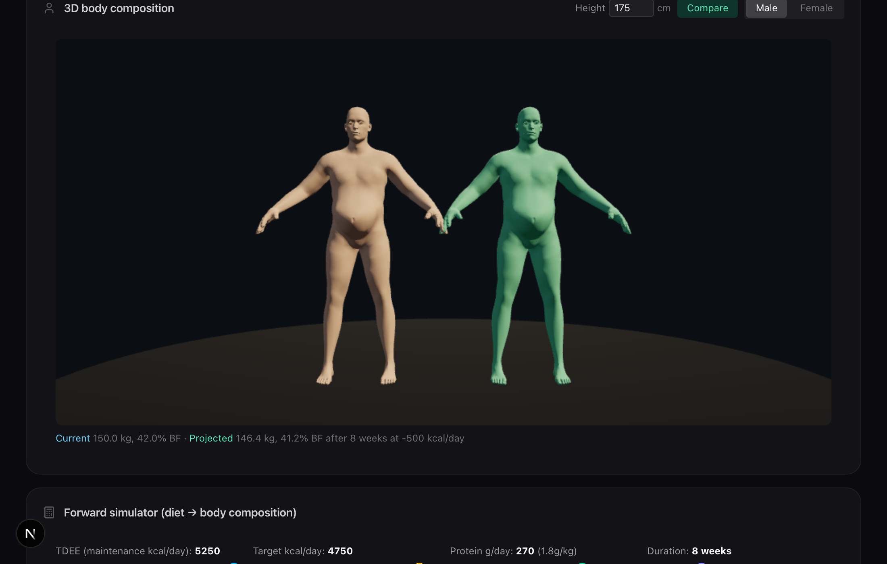
Morbid obesity — 150 kg @ 42 % BF, FFMI 28.4 (most fat, decent LBM)
Sarcopenic elderly — 55 kg @ 28 % BF, FFMI 12.9 (very low everything)
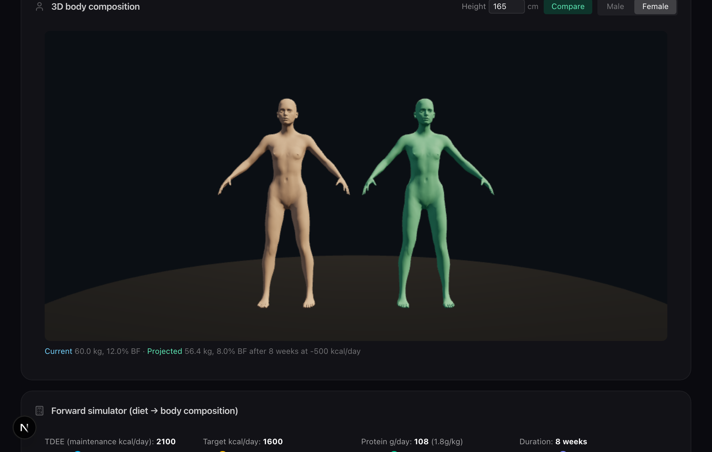
Female bodybuilder — 12 % BF, FFMI 19.5 (lean + muscular)
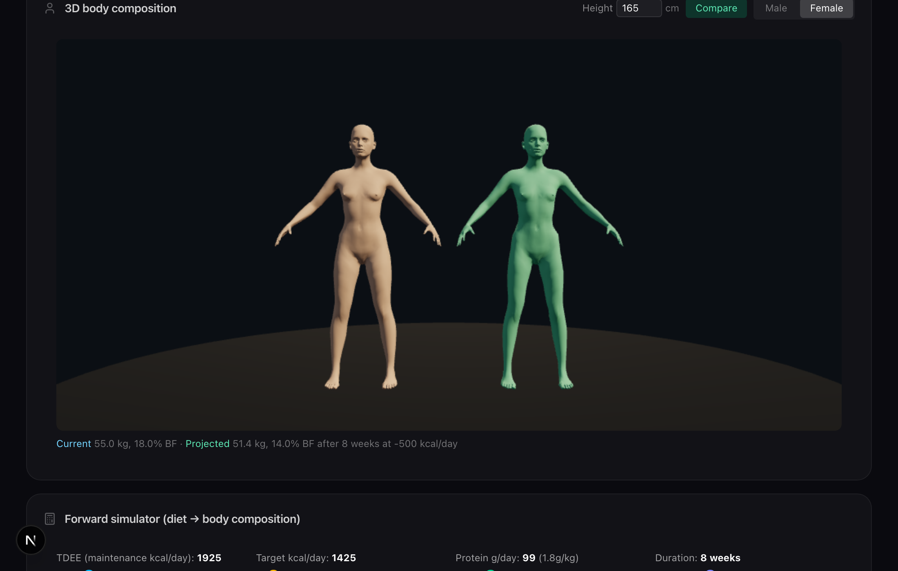
Slim model — 55 kg @ 18 % BF, FFMI 16.6 (low chest tissue)
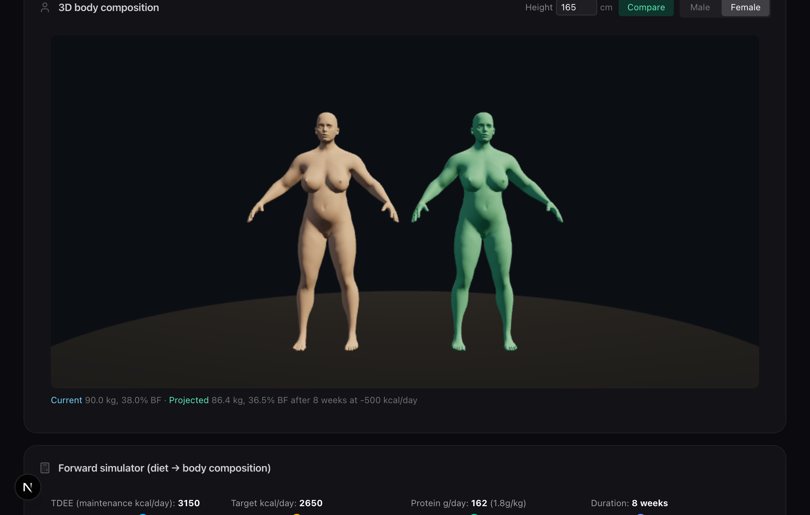
Curvy heavy — 90 kg @ 38 % BF (hip + breast morph should show)
No caliper data — method="scale", uniform BF-driven fallback
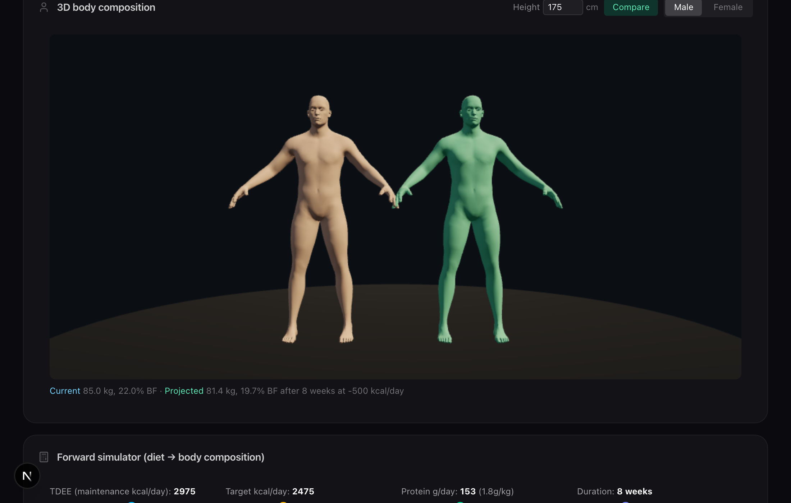
Extreme apple — heavy visceral (abd 42, sl 36), lean limbs (thigh 8)
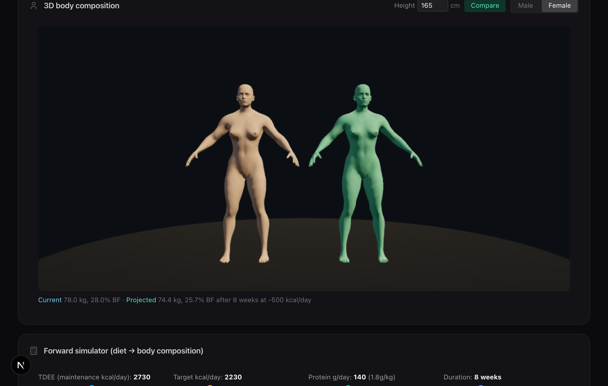
Extreme pear — lean trunk, huge thigh (40) + suprailiac (32)
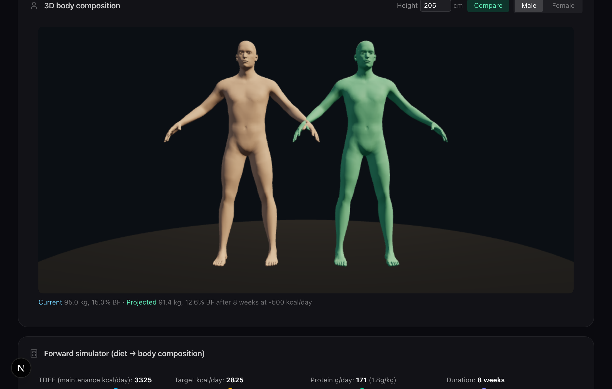
Very tall — 95 kg @ 2.05 m → FFMI 19.3 (mesh scaled to height)
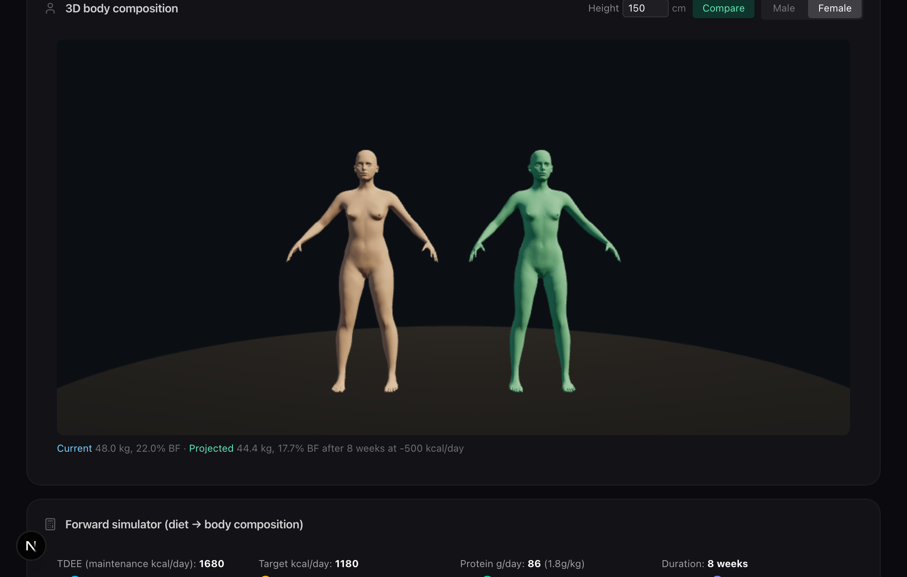
Very short — 48 kg @ 1.50 m → FFMI 16.6 (mesh scaled to height)
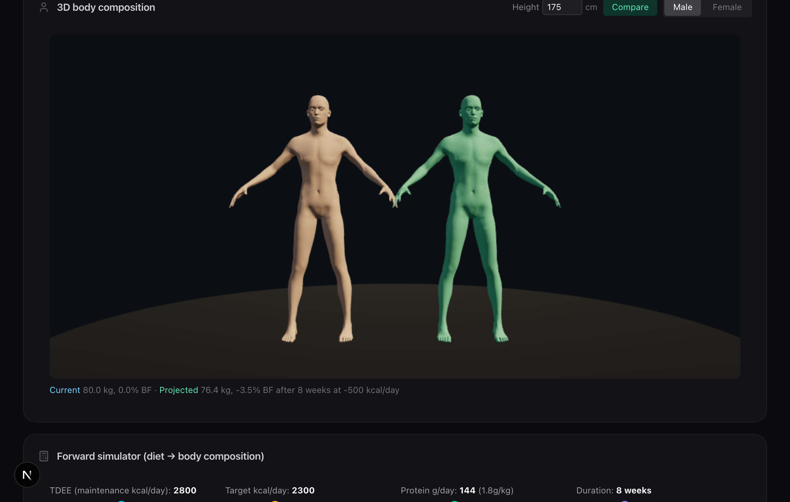
Numeric BF=0 — pure muscle, FFMI 26.1 (impossible IRL, tests min boundary)
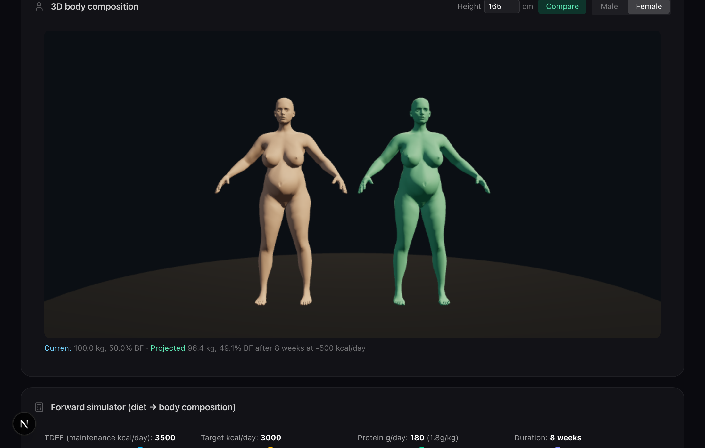
Numeric BF=50 — half body fat, FFMI 18.4 (extreme upper boundary)